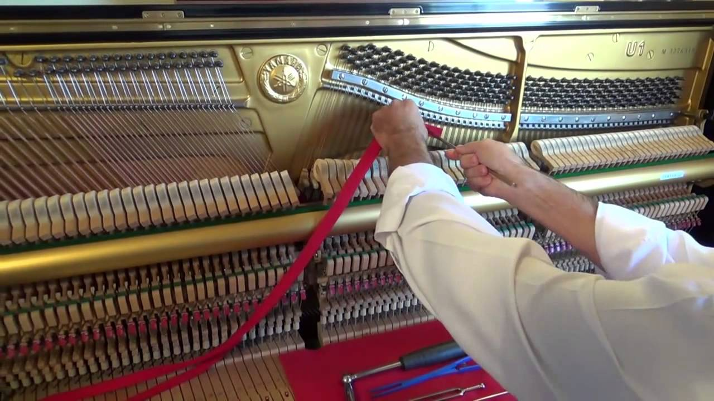
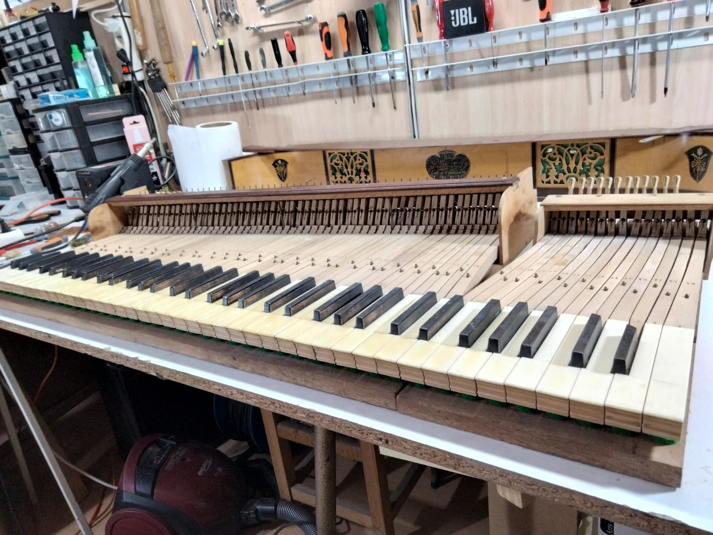
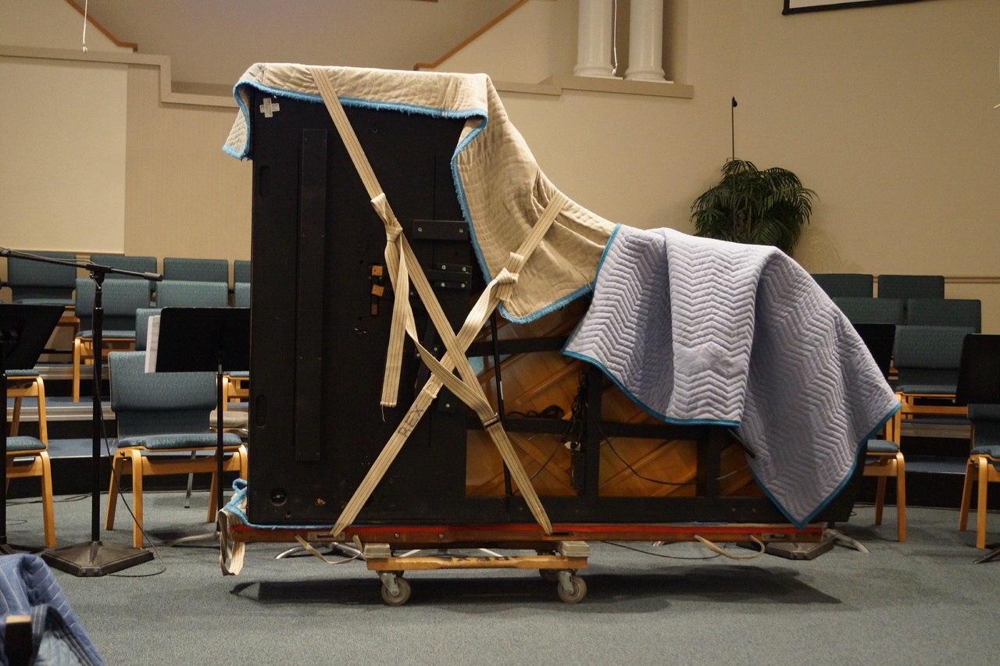

Afinaciones
¿Tu piano necesita afinación? En Gluck Pianos contamos con los mejores afinadores del país.
Si nos compraste un instrumento, ¡recordá que ofrecemos tres años de servicios de afinación y mantenimiento gratuitos!
Reparaciones
Nuestros técnicos expertos van a reparar tu piano manteniendo el estado original de fábrica.
Hacemos toda clase de reparaciones, ¡así que no dudes en ponerte en contacto con nosotros!


Transporte
¿Necesitás transportar tu piano?
En Gluck Pianos realizamos embalajes especiales otorgándote total seguridad al momento del transporte.